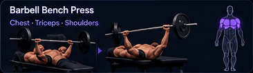

VYROGym & workout
GYM / WORKOUT JOURNAL
Log your next set.
40 KG × 10 REPS
Bench press3 SETS · UPPER BODY
Interactive concept preview · sample data
VYRO
An offline workout journal. Build routines, plan sessions, log sets, and follow your progress over time.
- Build and reorder routines using a searchable exercise catalog with muscle and equipment filters.
- Plan recurring weeks and dated sessions, with rest days and explicit links between planned and completed workouts.